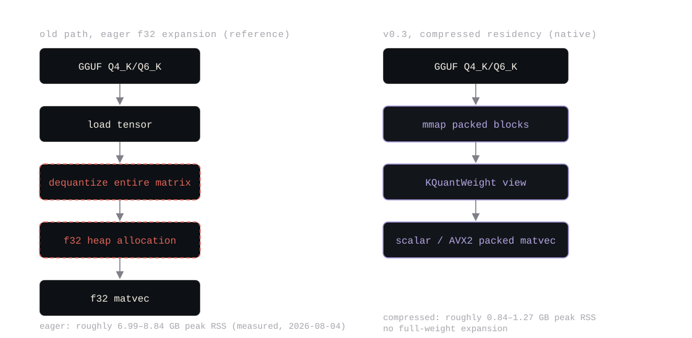
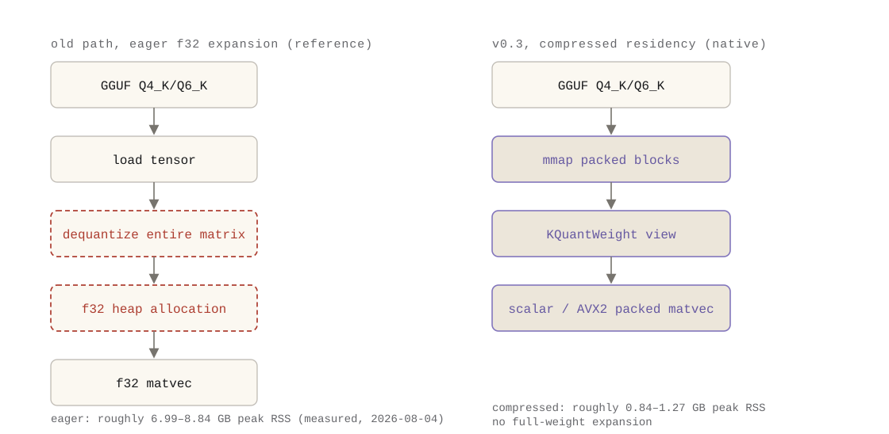
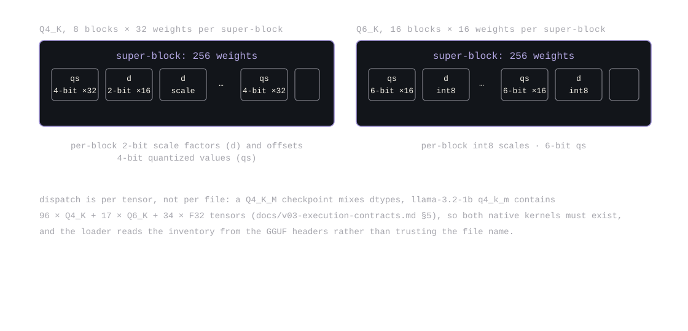
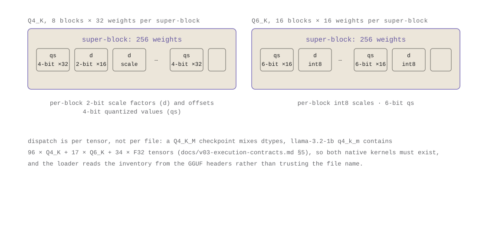
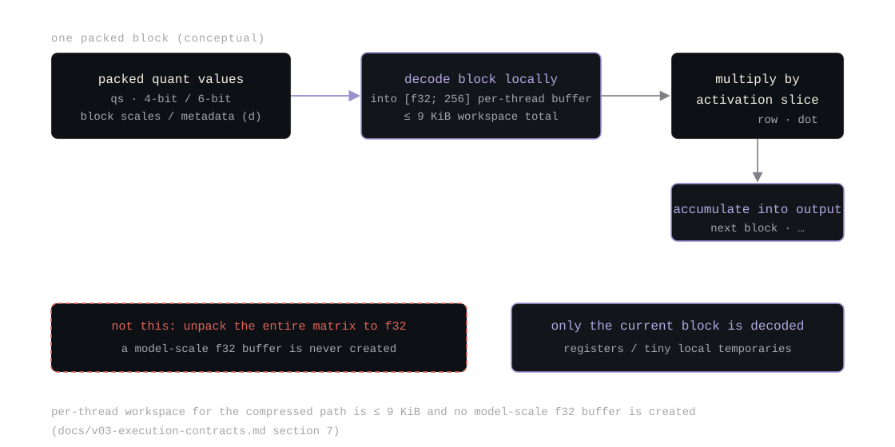
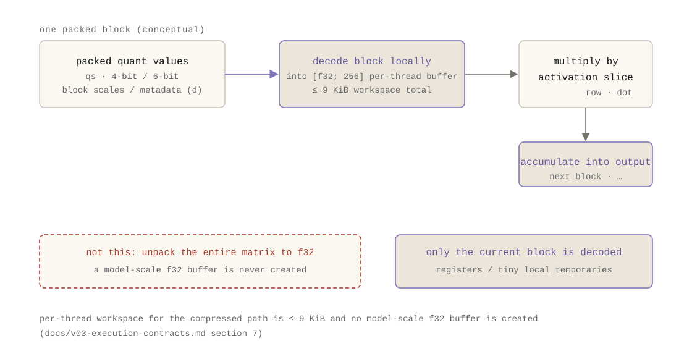
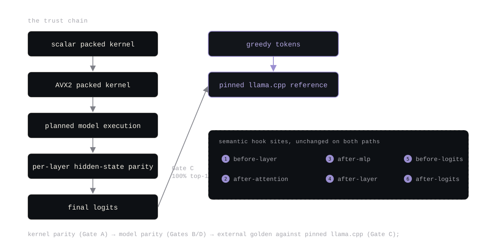
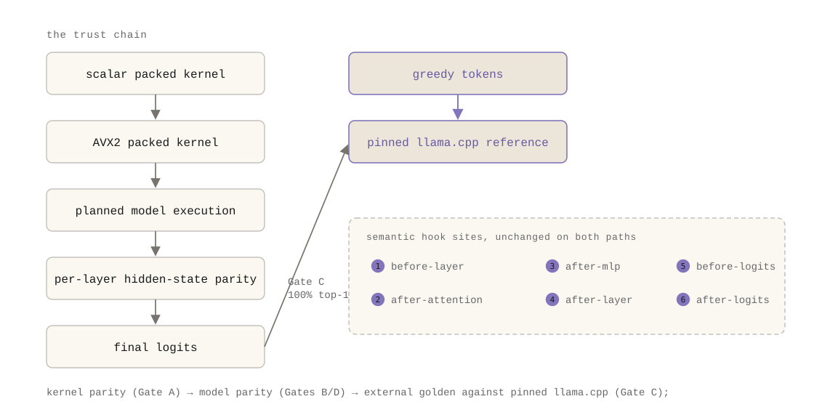

مسودة مكتملة باستشهادات صريحة لـ artifacts المستودع. الأشكال مضمّنة كـ SVG (نسختا الوضع الداكن
والفاتح) بتعليقات تستشهد بالأدلة. أرقام الأداء والذاكرة هنا أُعيد اشتقاقها من بناءات موسومة
في 2026-08-04 ومسجّلة في artifacts/benchmark-v03/part3-binary-memory.md؛ قيم
زمن الإصدار مستشهد بها من artifacts/benchmark-v03/bench-summary.json و
docs/validation.md.
الملف قال Q4 والمحرك قال f32. كان النموذج أصغر على القرص وبنفس الحجم في الذاكرة، حتى أوقف v0.3 المحرك من فك ضغط النموذج.
الملف الكمّي وعد بالحجم. Q4_K_M تعني نحو أربع بتات لكل وزن على القرص، والملف يفي: Llama-3.2-1B بصيغة Q4_K_M أصغر نحو 39% من النموذج نفسه بصيغة Q8_0. ينكسر الوعد لما يُحمَّل النموذج. محمّل Ember قبل v0.3 كان يفك كل tensor K إلى f32 عند التحميل ويُبقي المخازن الموسّعة مقيمة، ثم يشغّل كل شيء عبر kernels f32 عامة. بقي الملف Q4 على القرص؛ النموذج الجاري كان f32 في الذاكرة.
العواقب قِيست قبل v0.3 في ملاحظة خط الأساس المجمّدة
(docs/research-notes/the-file-said-q4-runtime-said-f32.html) على الجهاز نفسه
اللي أنتج قياسات الإصدار:
| النموذج | الملف | decode جشع tok/s | ذروة RSS | التمثيل في زمن التشغيل |
|---|---|---|---|---|
| Qwen2.5-1.5B | Q4_K_M 1066 MB | 2.6 | 8712 MB | توسعة f32 دائمة |
| Qwen2.5-1.5B | Q6_K 1396 MB | 2.5 | 8713 MB | توسعة f32 دائمة |
| Llama-3.2-1B | Q4_K_M 770 MB | 3.2 | 6965 MB | توسعة f32 دائمة |
| Llama-3.2-1B | Q6_K 974 MB | 2.9 | 6965 MB | توسعة f32 دائمة |
| Llama-3.2-1B | Q8_0 1260 MB | 149.6 | 2685 MB | مضغوط مقيم |
عبر الصفوف الأربعة Q4/Q6، كانت ذروة RSS أعلى 2.59×–4.49× من خط أساس Q8_0، والـ decode أبطأ 15.6×–51.6×. المحور الوحيد اللي كانت فيه الملفات منخفضة البت أصغر هو الملف نفسه.
هذا هو السؤال اللي يجيب عنه الإصدار دا: ما فائدة نموذج Q4 إذا كان المحرك يفكّه إلى f32؟
محمّل dequant-to-f32 ما كان كسلًا. كان الاختيار الهندسي الصحيح لمحرك بحثي وظيفته الأولى الصدق
الرقمي: تمثيل واحد، مسار kernels عام واحد، لا تنفيذ لكل dtype ليُتحقق. يذكر عقد v0.3
(docs/v03-execution-contracts.md) الكلفة بصراحة في القسم 3: ذاكرة الأوزان المقيمة
4× الحجم المضغوط، Llama-3.2-1B Q6_K بحجم 1.02 GB على القرص ونحو 4.1 GB كـ f32 مقيم، وكل
matmul gemm كثيف f32.
المشكلة ما كانت أبدًا أن المسار المرجعي موجود. المشكلة أنه كان المسار الوحيد. ملف Q4 لازم يُوسَّع إلى f32 قبل ما يشتغل مو نشرًا منخفض الذاكرة؛ إنه محمّل بحثي يصادف أنه يقرأ ملفات Q4.
ثلاثة قياسات جعلت التغيير لا مفر منه. أولًا، ذروة RSS للمسار الـ eager تتبّعت الأوزان
الموسّعة لا الملف: نحو 6.99 GB لـ Llama Q4_K_M/Q6_K ونحو 8.83 GB لـ Qwen2.5-1.5B على هذا
الجهاز (أُعيد في 2026-08-04؛ القسم 2 من
artifacts/benchmark-v03/part3-binary-memory.md). ثانيًا، مرجع llama.cpp المثبّت
شغّل الملفات نفسها عند ذروة RSS من 1.08–1.77 GB
(artifacts/benchmark-v03/bench-summary.json). ثالثًا، كان decode الـ K-quant
الـ eager أبطأ من جلسة Q8_0 للنموذج نفسه على الجهاز نفسه بمرتبة إلى مرتبتين. لا شيء من هذا
ادعاء أن Q4 "أسوأ" من Q8، إنه بيان عما يفعله المحرك بملف.
القيد، المجمّد قبل التنفيذ (docs/v03-execution-contracts.md)، سطر الحالة: تبقى
الأوزان مضغوطة ومقيمة عبر mmap، ولا يتم فك الكمّية إلا على دقة كتلة أو بلاطة داخل kernels
الـ matmul. لا توسعة f32 كاملة دائمة لـ tensors المسار الأصلي. جمد العقد كمان حدود التغيير:


الـ K-quants مو صيغة واحدة. tensor Q4_K يخزن 8 كتل لكل super-block مع مقاييس وإزاحات لكل
كتلة؛ Q6_K يخزن 16 كتلة لكل super-block بمقاييس int8؛ ونموذج "Q4_K_M" مزيج لكل tensor،
ملف Llama-3.2-1B Q4_K_M يحتوي 96 tensor من Q4_K و17 من Q6_K (قيمة attention + هبوط FFN في
طبقات مختارة، إضافة إلى الـ embedding المرتبط) و34 tensor من F32 للـ norms والتحيزات
(جرد في docs/v03-execution-contracts.md القسم 5). وعشان كدا لازم على المسار الأصلي أن
يوزّع لكل tensor لا لكل ملف، وQ4_K_M تفرض وجود kernels Q4_K وQ6_K معًا.
وولازم المحمّل كمان يحترم تحوّل ترقيم الـ dtype في 2024 (Q2_K=10 … Q6_K=14 في GGUF)، فقراءة نوع tensor K خطأً تُفسد كل وزن من غير خطأ (نطاق الـ dtype موثق في القسم 3 من العقد). ومعنى "لكل tensor" أن "Q4" لا تُدّعى أبدًا من اسم الملف؛ الجرد يُقرأ من رؤوس GGUF.


التمثيل الجديد (KQuantWeight في src/quant_k.rs) يطابق قالب Q8_0
المضغوط الموجود: تخزين كتل خام مدعوم بـ mmap، مع بناء متحقق (محاذاة كتل، طول بايت، نطاق
معيّن). فك الكمّية يعيد استخدام dequant_q4_k/dequant_q6_k
المتحققَين مرجعيًا على دقة الكتلة. ووفوق كدا:
--k-strategy eager-f32|scalar|x86|auto؛
dtypes غير مدعومة تحت استراتيجية مضغوطة صريحة تفشل قاسيًا مسمّية الـ tensor ما لم يُعطَ
--k-allow-fallback؛ auto يختار x86 عند توافره ويسجّل القرار
(القسم 6 من العقد).بطارية أشكال kernels في اختبارات الوحدات عريضة عمدًا، صفوف {1,2,8,32} × in {256,512,1536,2048,8960} × out {128,512,2048}، إضافة إلى حواف مقياس صفري وسالب أدنى ومشبع وغير محاذاة (القسم 9 من العقد، Gate A).


سُجّلت البوابات مسبقًا في العقد قبل التنفيذ ومو ممكن إلا تشديدها لا تخفيفها لملاءمة النتائج. أربع بوابات عددية والخامسة سير الشغل السببي:
max_abs ≤ 1e-4·scale عبر بطارية الأشكال
والحواف؛ AVX2 مقابل العددي ضمن السماحية.max_abs ≤ 5e-4·scale لكل طبقة، cosine ≥ 1−1e-6،
logits ≤ 1e-2 (qwen عُدّل إلى 2e-2)، تسلسلات tokens جشعة متطابقة على مجموعة الـ prompts
المجمّدة. انقلاب token فشل يُحقَّق، لا حدٌّ يُرخى.docs/validation.md، قسم v0.3). توافق top-1 توافق على الـ argmax لا مساواة
logits.docs/validation.md).

الجزء الصادق من Gate C تاريخ تعديلاته، اللي يسجّله العقد حرفيًا. أول حدّ مسود (max abs ≤ 1e-2 على logits النهائية) أخطأ قراءة المعيار golden القائم، فتقرير Q8_0 للـ pilot نفسه أظهر max abs 0.364 مقابل kernels تراكم الأعداد الصحيحة في llama.cpp، فلا تغيير ترتيب تراكم ممكن أن يبلغ 1e-2 على هذي العائلة. أصبح المعيار المبني على الأدلة: top-1 100%، cosine ≥ 1−1e-3، mean ≤ 0.1، max ≤ 1.0؛ وتعديل ثانٍ نقل حد العنصر الأقصى الفردي من 0.5 إلى 1.0 بعد ما أثبت عنصر متطرف واحد من 128k لكل عينة حساسيته للمُكمِّم وللترتيب؛ وتعديل ثالث حدد المغلفات النهائية لكل عائلة من تشغيل السلم الست الكامل. لم يغيّر أي منها البوابة الأولية، ظل توافق top-1 100% طوال الوقت.
أُعيد اشتقاقها في 2026-08-04 من بناء tag v0.3.0 (الأوامر الكاملة والقيم الخام في
artifacts/benchmark-v03/part3-binary-memory.md)، بالبروتوكول نفسه لمصفوفة
الإصدار (scripts/bench_v03.sh، 64 token، إحماء 1، 3 تكرارات، 8 خيوط، ذروة RSS
للعملية كلها):
| النموذج | الاستراتيجية | median tok/s | ذروة RSS |
|---|---|---|---|
| Llama-3.2-1B Q4_K_M | eager-f32 | 0.98 | 6,989,724 KB (6.67 GiB) |
| Llama-3.2-1B Q4_K_M | مضغوط (x86) | 2.01 | 844,216 KB (0.81 GiB) |
| Llama-3.2-1B Q6_K | eager-f32 | 0.98 | 6,989,252 KB (6.67 GiB) |
| Llama-3.2-1B Q6_K | مضغوط (x86) | 2.21 | 1,053,524 KB (1.00 GiB) |
| Qwen2.5-1.5B Q4_K_M | eager-f32 | 0.87 | 8,828,632 KB (8.42 GiB) |
| Qwen2.5-1.5B Q4_K_M | مضغوط (x86) | 1.66 | 987,360 KB (0.94 GiB) |
| Qwen2.5-1.5B Q6_K | eager-f32 | 0.85 | 8,837,276 KB (8.43 GiB) |
| Qwen2.5-1.5B Q6_K | مضغوط (x86) | 1.67 | 1,266,684 KB (1.21 GiB) |
خفّض المسار المضغوط ذروة RSS 6.6×–8.9× مقابل الـ eager على الثنائي نفسه، وتحسّن الـ decode
1.9×–2.3× في هذي الجلسة. وسجّلت مصفوفة زمن الإصدار تسريعات مماثلة (1.94×–2.75×) وبصمة
الأوزان المقيمة بحجم الملف: 799.6 MB مضغوطًا مقابل نحو 3.2 GB موسّعًا لـ Llama Q4_K_M،
و1457.6 MB مقابل نحو 5.83 GB لـ Qwen Q6_K
(artifacts/benchmark-v03/bench-summary.json، docs/v03-execution-contracts.md
القسم 5). مرجع llama.cpp المثبّت شغّل الملفات نفسها عند 1.08–1.77 GB ذروة RSS، مسار Ember
المضغوط أصبح في الحي نفسه، وهو حيث لازم يعيش النموذج الكمّي.
وأذرع الـ eager لهذه الإعادة تطابق خط الأساس المجمّد قبل v0.3 ضمن 0.4% (6,989,724 KB مقابل
6,965 MB المسجّلة لـ Llama Q4_K_M)، وهو فحص الصحة اللي يؤكد أن المقارنة تقيس تغيير التمثيل
لا انجراف الجهاز (artifacts/benchmark-v03/part3-binary-memory.md القسم 2).
كلفة الثنائي: النمو المقاس من v0.2.0 إلى v0.3.0 هو 820,480 بايت (نحو 801 KiB) على الأداة الحالية (rustc 1.95.0). تقدير داخلي بنحو "190 KB" لا يعيد إنتاجه تحت هذي الأداة؛ القيمة المقاسة مسجّلة في ملف الأدلة. أضاف الإصدار نحو 0.8 MiB من kernels وتوزيع ومصدر إلى القابل للتنفيذ، مقابل 6–8 GiB من الذاكرة أزالها.
إبقاء الأوزان مضغوطة أصلح مشكلة الذاكرة، بس الـ decode لسه يشغّل المسار المربوط العام مع إعادة اكتشاف توزيع لكل token ومساحة عمل لكل token. الإصدار التالي، v0.4، يخطط داك التنفيذ مرة واحدة لكل نموذج، ويشتغل مشغّل الخطة على هذي الركيزة المضغوطة بالضبط. الذاكرة اللي وفّرها المسار الأصلي هي الذاكرة اللي يرفض المحرك المُخطَّط إعادة تخصيصها وبعدها.